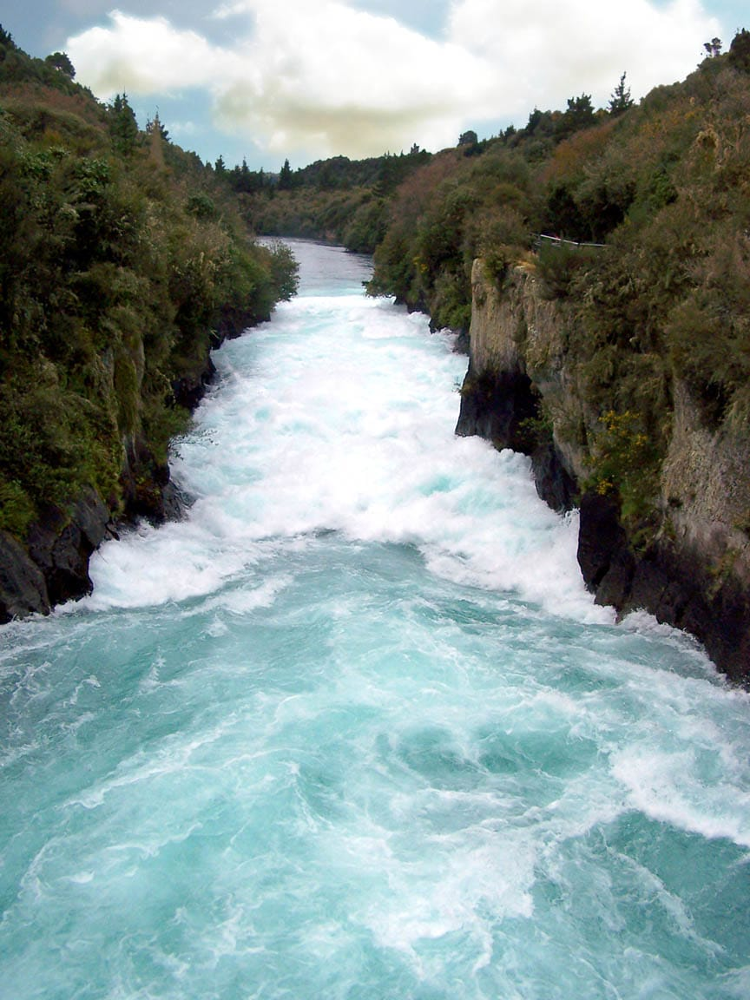
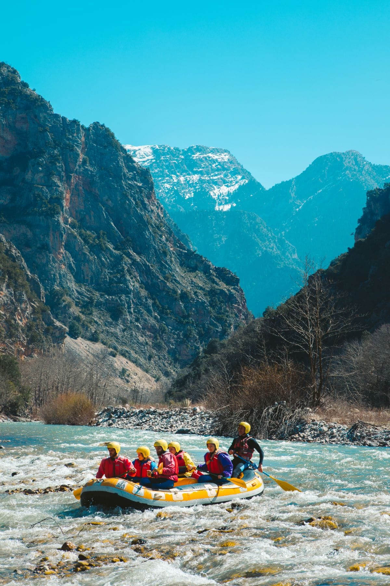

We Love White Water Rafting
We believe that there is nothing like a river trip for relaxing. That is why we subscribe to the
dry oar philosophy of
boating. Keeping your oars dry, for us, means taking time to look around and notice the beauty that surrounds
the rivers we love.
We Love White Water Rafting
We believe that there is nothing like a river trip for relaxing. That is why we subscribe to the dry oar
philosophy of
boating. Keeping your oars dry, for us, means taking time to look around and notice the beauty that surrounds
the rivers we love.

We Know You'll Love It Too

That doesn't mean we don't also like rapids. Opposites in all things after all. We believe that the tenseness
that
comes when you are looking down the tongue of a big string of waves makes you appreciate the calm beautiful
water that always follows even more.
Come Run With Us
We invite you to come relax with us on one of the amazing rivers we visit. Check out our trips and
let us known
which one best suits you. We're waiting to hear from you!